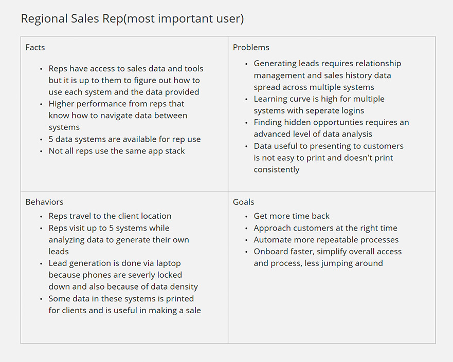
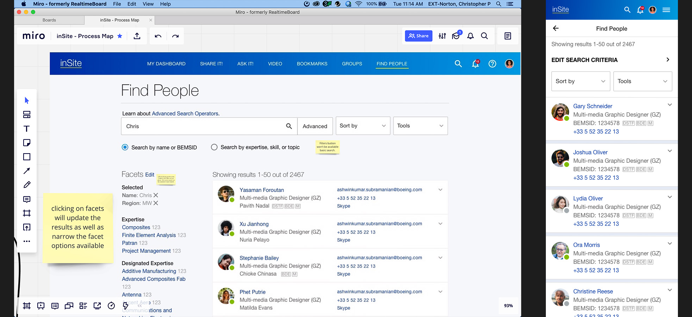

<!DOCTYPE html><html lang="en" id="top"><head><meta charset="UTF-8"/>
<meta name="viewport" content="width=device-width, initial-scale=1.0">
<meta http-equiv="X-UA-Compatible" content="IE=edge"/><title>Chris Norton: Designer</title><link rel="preconnect" href="https://fonts.googleapis.com">
<link rel="preconnect" href="https://fonts.gstatic.com" crossorigin><!--link(href='https://fonts.googleapis.com/css2?family=Open+Sans:wght@400;700&family=Source+Sans+3&display=swap', rel='stylesheet')--><link href="https://fonts.googleapis.com/css2?family=Arimo:ital,wght@0,400..700;1,400..700&amp;family=Source+Sans+3&amp;display=swap&amp;display=swap" rel="stylesheet"/><link rel="stylesheet" href="https://cdnjs.Cloudflare.com/ajax/libs/font-awesome/4.7.0/css/font-awesome.min.css"/><link rel="stylesheet" href="styles/styles-2025.css"/><script src="js/polyfill.min.js"></script></head></html><body><div class="wrapper bg-light-1"><div class="page"><header><h1>Christopher Norton</h1><nav><a href="index.html">Home</a><a href="index.html#projects">Projects</a><a href="#contactForm">Contact</a><a class="linkedin" href="https://www.linkedin.com/in/christopher-p-norton/" target="_blank"></a></nav></header><section class="bubble"><div class="content"><div class="page-nav top"><a class="back" href="index.html#projects"><svg width="24" height="24" viewBox="0 0 24 24" fill="none" xmlns="http://www.w3.org/2000/svg">
<path d="M20 18V20H13.5C9.91 20 7 17.09 7 13.5V7.83L3.91 10.92L2.5 9.5L8 4L13.5 9.5L12.09 10.91L9 7.83V13.5C9 16 11 18 13.5 18H20Z" fill="black"/>
</svg>Projects</a></div><h2>Boeing</h2><p>New Business Generator</p><div class="tags"><div class="tag ux">UX</div><div class="tag ui">UI</div><div class="tag uxr">UXR</div><div class="tag redacted">Limited</div></div><h4>Limited</h4><p>Due to the security policies and competitive nature of the projects I worked on at Boeing, I walked away with very few visuals of the <strong>most impactful work</strong> a New Business Generator application that included client sales prediction models and client management features handling <strong>billions</strong> of dollars in sales.</p><h4>Impact</h4><p>Generated new leads and increase sales by approaching customers at the right time. Gave users more time back by automating repeatable processes with faster onboarding and simplifying overall access to sales data.</p><h4>My Quickest Win</h4><p>I saved the product team tens of thousands of dollars within the first 15 minutes of my first meeting at Boeing just by asking the head of sales how they would use the predictive sales application out in the field on mobile devices. The answer was "Never. We will never use it that way." We ended up eliminating the mobile requirement altogether. You don't always need a prototype to understand why a design suggestion isn't solving a problem. Sometimes you just need a conversation with the right people.</p><h6>Sample Initial Questions</h6><p>Design always depends on context. Before starting on any design I'm always looking to understand what the solution is supposed to achieve and for who and under what constraints for both the business and the user.</p><ul class="checkmark-list"><li>What problem does this solve or what result are we aiming for?</li><li>Who is the audience?</li><li>When and where are they using our solution?</li><li>What facts and behaviors will likely affect the solution needed?</li><li>Do we need to validate any data?</li><li>How will we know it worked/how can it be measured?</li><li>What's the timeline to production?</li></ul><h6>Question Results</h6><p><small>Starter persona used to understand <strong>who</strong> I was designing for, <strong>where</strong> and <strong>when</strong> problems occurred before I could start thinking of solutions.</small></p><h6>Solutioning</h6><p>I can't show a lot of the predictive sales data or how managers configured those screens but one flow was to figure out how sales managers would configure or push emails and how sales reps would receive those email leads as well as all the preferences involved as shown below. This is just a small part of the application.</p><p><small>Mapping out a small part of the flow for when the application or manager decides to send sales reps important alerts and reports.</small></p><h5>A few more things I did during my time:</h5><ul><li>Designed a mix of enterprise-level internal web and mobile applications such as a zero to production predictive sales application and upgrading a legacy community social platform similar to Facebook.</li><li>Designed flows managing <strong>billions</strong> in sales, expanding new business, creating quotes, managing inventory, monitoring future trends, and pushing predictive intelligence to sales leaders.</li><li>Designed landing pages and one-off sites for various departments and program initiatives like safety training or automating actions. For example, submitting and pre-classifying artifacts of historical significance to the Boeing historical department.</li><li>Designed responsive-design flows for a social platform similar to Facebook, allowing Boeing to preserve decades of interdepartmental knowledge sharing.</li></ul><h5>Specifically:</h5><ul><li>Validated stakeholders across a range of concerns and access privileges to CTAs and content.</li><li>Used Figma to create high-fidelity, interactive prototypes for web and mobile applications as well as external interactions like email notifications and augmented reality to scan objects.</li><li>Established usability metrics and testing from zero to 1 with feedback forms on new features, and live usability testing and scoring on prototypes.</li><li>Prioritized features so teams could update the most impactful features first vs just feature-parity of legacy products.</li><li>Provided markup instructions to dev teams to execute flows.</li><li>Utilized IBM's <strong>Carbon</strong> Design System as Well as Google's <strong>Material</strong> Design System</li></ul><h4>More Examples</h4><p>I worked on multiple, less secretive sites as well, but these launched quickly and there really wasn't a ton of iteration or data-driven design before launch date.</p><p class="full-img"><h6>Enterprise Sourcing Office</h6></p><p class="full-img"><h6>Advanced Quality Product Planning</h6></p><p class="full-img"><h6>inSite - Social Media Platform</h6></p><p class="full-img"><h6>Commerical Airplanes Total Quality</h6></p><div class="page-nav bottom"><a class="back" href="index.html#projects"><svg width="24" height="24" viewBox="0 0 24 24" fill="none" xmlns="http://www.w3.org/2000/svg">
<path d="M20 18V20H13.5C9.91 20 7 17.09 7 13.5V7.83L3.91 10.92L2.5 9.5L8 4L13.5 9.5L12.09 10.91L9 7.83V13.5C9 16 11 18 13.5 18H20Z" fill="black"/>
</svg>Projects</a></div></div></section></div></div><footer class="bg-light-4"><div class="about-me"><h6>Christopher Norton</h6><p>Senior designer with experience in UX/UI launching 26 new products and countless features for web and mobile in the last 10 years. Able to lead, execute, analyze, and iterate on products from start to finish for cross-functional and regionally diverse teams. Strong problem-solving skills and a design thinker with a proven track record in enterprise-level B2B, B2C and SaaS products for clients such as: <strong>Boeing</strong>, <strong>Dell</strong>, <strong>John Deere</strong>, <strong>Booz Allen</strong>, <strong>Animal Planet</strong>, <strong>The Learning Channel</strong>, and others.</p><small><strong>Hidden Gem</strong>: I also developed this site from scratch using HTML5, CSS3, and JS using Node.js to run a local preview server which compiles and minifies Sass on the fly with Autoprefixer, CSS Lint and ES Lint. Version control is run through Github pages. I have wide a wide range of skills enabling me to bridge the communication gap between business stakeholders, designers and engineering teams.</small></div><div class="social-links"><h4 style="color: #345f7d">Site</h4><a href="index.html">Home</a><a href="index.html#projects">Projects</a><a href="https://www.linkedin.com/in/christopher-p-norton/" target="_blank">LinkedIn</a><a href="downloads/chris_norton_resume_ux_designer_2025-3.pdf" target="_blank">Resume</a></div><form method="post" name="contactForm" id="contactForm"><h6>Contact Me</h6><div class="form-group"><label for="fullName">Full Name</label><input name="fullName" id="fullName" type="text"/></div><div class="form-group"><label for="email">Email</label><input name="email" id="email" type="text"/></div><div class="form-group"><label for="message">Message</label><textarea name="message" id="message" rows="7"></textarea></div><div class="form-group"><button type="submit" id="submitContact">Send</button></div><div class="form-group"><small id="formStatus">Your message has been sent.</small></div></form></footer><script src="js/contact.js"></script></body>